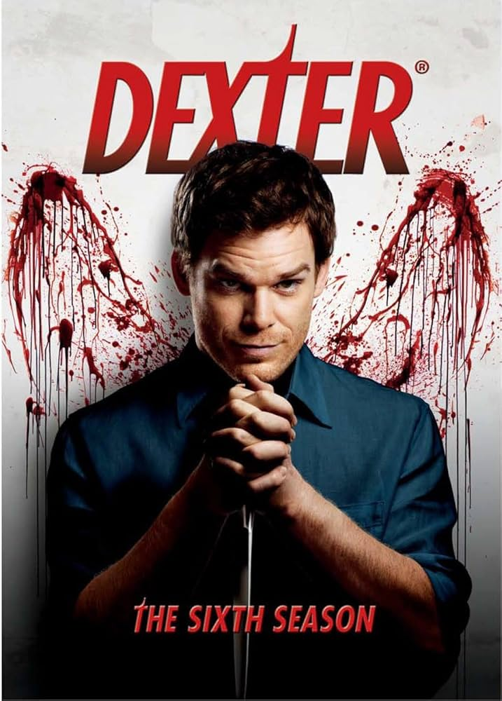
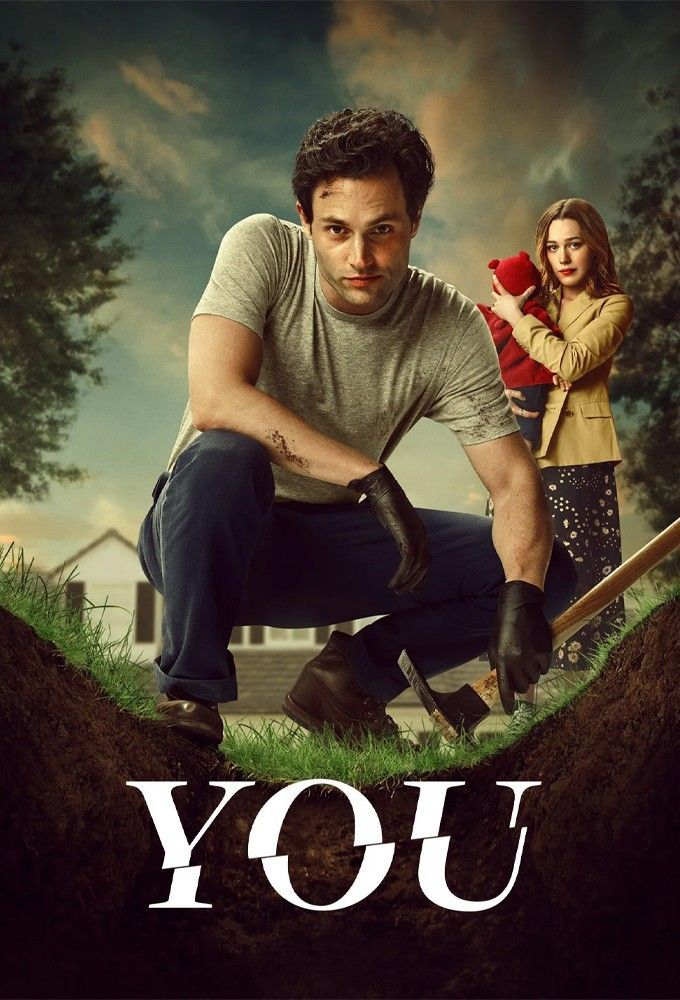
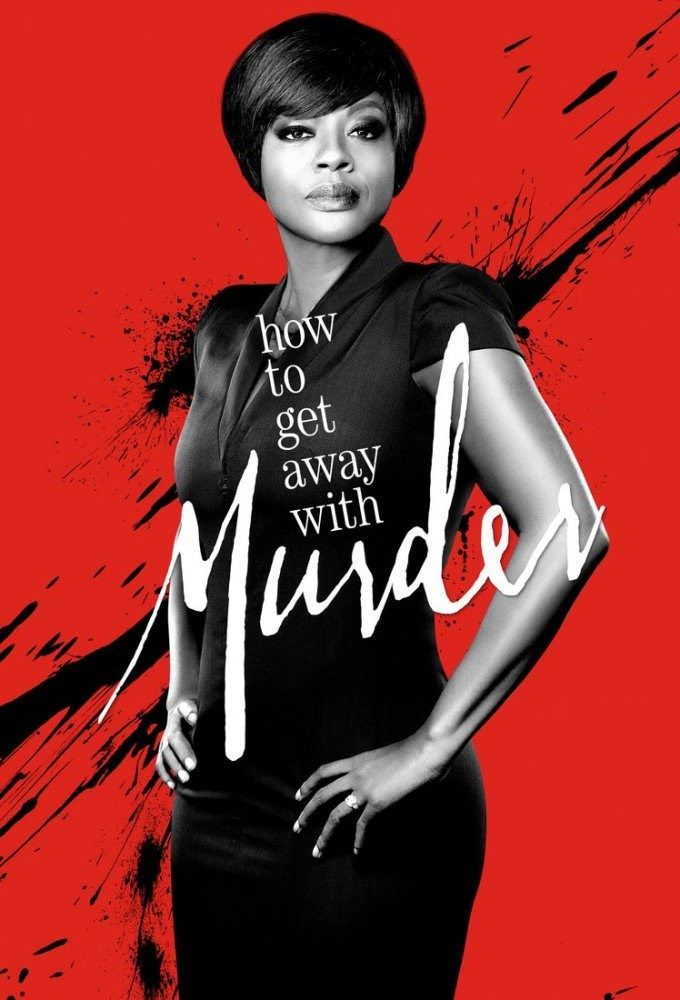
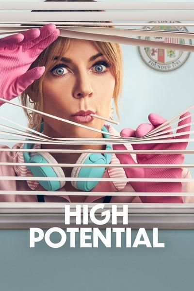

Unidos pelo entretenimento
Conheça as maiores séries de todos os tempos
Histórias inesquecíveis não cabem em algumas horas de filme, elas precisam de temporadas para existirem.
Se divirta assistindo
Unidos pelo entretenimento
Histórias inesquecíveis não cabem em algumas horas de filme, elas precisam de temporadas para existirem.
Conheça as Séries

Dexter é um especialista forense que passa o dia cometendo crimes e a noite cometendo assassinatos.

Obssesivo e charmoso, Joe vai ao extremo para entrar na vida de quem o fascina.

Patrick Jane, famoso por seus métodos incomuns, tem um histórico notável para a resolução de crimes graves por meio de poderes misteriosos de observação.

Annalise Keating é advogada da área criminal, e professora de direito, e ao lado de cinco de seus alunos, ela se envolve em tramas de assassinato.

Ao atender uma ligação de emergência,um agente do FBI se vê no centro de uma conspiração leta, envolvendo espionagem na Casa Branca.
O ladrão gentil, Arssane Diop que se vingar de uma família rica por uma injustiça cometida contra o seu pai.
Oito ladrões se trancam com reféns na Casa da Moeda da Espanha. Seu líder manipula a polícia para realizar um plano que pode ser o maior roubo da história, ou uma missão em vão.
Berlim se encontra com um grupo em Paris para planejar uma de sua missões mais ambiciosas: roubar 44 milhões de euros em joias em uma noite.

Uma mãe solteira com uma mente brilhante, cujo o talento não convencional para solucionar crimes leva a uma parceria em incomum e imbatível com um detetive experiente e metódico.